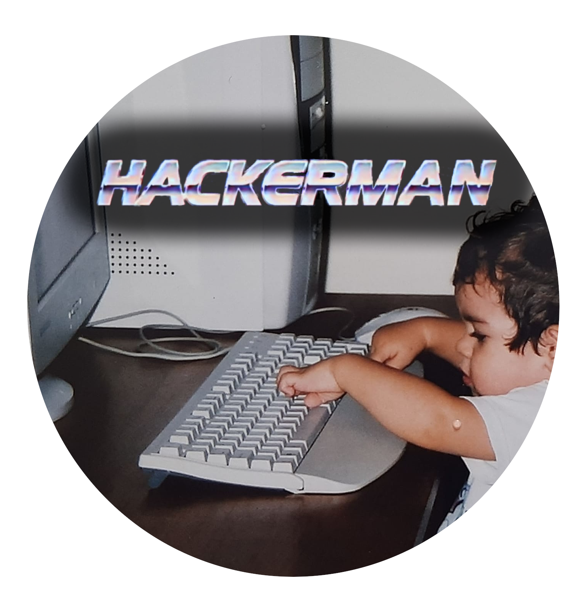

Bem-vindo(a) ao meu console!
👋 Quem sou eu?
Aluno do primeiro período de Ciência da Computação (Universidade Veiga de Almeida), viciado em tecnologia!
💻 Por que Cientista da Computação?
Desde criança sempre fui ligado, interessado e curioso por tecnologia. O meu primeiro contato com um computador foi logo criança, por volta de 2007, rodando campo minado em um Linux. A minha paixão pela computação só aumentou com o passar do tempo, e aqui estou hoje, estudando para me tornar um cientista!

Como eu comecei no Linux e o abandonei, tenho vontade de voltar a usa-lo como sistema operacional, por isso o lance do favicon de pinguim. Além de ser cult e legal, é minha "sidequest" como recém-dev.